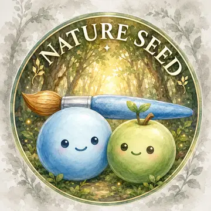

Nature Seed Юл сызыгыз. Аларны берләштерегез.
Браузерда бушлай уйнарга мөмкин булган сызып чишелә торган физик табышмак. Чикләнгән сыя белән сызык сызыгыз, ул Water Drop-ны Seed янына илтүче таю, күпер яки тоткыч ноктасына әверелә. Һәр чишелгән дәрәҗә акварель урман күренешен терелтә.
2026 елның 18 сентябрендә 100 дәрәҗә, сызык нәтиҗәлелеге йолдызлары һәм сакланучы прогресс белән чыкты. itch.io, Game Jolt һәм indiexpo-да бушлай; максат - iOS һәм Android версиясе, ул кушымта кибетләрендә әле юк.
Сызучикләнгән сыя белән сызыгыз
ТоташуWater Drop-ны Seed янына илтегез
Чәчәк атуурманны кайтарыгыз
Агымдагы җыелма эчендә
Сез сызган нәрсә дәрәҗәнең өлешенә әверелә.
Сез сызган һәр штрих чын бәрелешләре булган каты объектка әйләнә, ә Water Drop белән Seed аңа җавап бирә. Сыя да, сызыклар саны да чикләнгән, шуңа күрә сызык формасы әһәмиятле.
Чыгару статусы 2026 елның 18 сентябрендә чыгарылды

Уенга караш
Ике кечкенә геройны очраштыру турында тынычландыручы сызып чишелә торган табышмак.
Идея
Юл сызып, Water Drop белән Seed-ны очраштырыгыз һәм тынычлык тулы эскизның терелүен карагыз.
Чыгарылыш җыелмасы
Сенсорлы сызу, сызык нәтиҗәлелеге йолдызлары һәм сессияләр арасында сакланучы прогресслы 100 уйнарлык дәрәҗә.
Аудитория
Тыныч табышмакларны, җиңел физиканы, табигать темасын һәм ашыкмый торган мобиль сессияләрне яраткан уенчылар.
Статус
2026 елның 18 сентябрендә чыкты, браузерда бушлай уйнарга була. Максат - мобиль версия; ул кушымта кибетләрендә әле юк.
Үзенчәлекләр
Nature Seed уенында сез нәрсә эшлисез.
Сызып чишелә торган физик юллар
Һәр табышмак рельефтан, Seed һәм Water Drop-тан башлана. Уенчының сызыгы аларны тоташтыручы таюга, күпергә яки тоткыч ноктага әверелә.
Физиканың ачык җавабы
Water Drop һәм Seed аңлаешлы хәрәкәт итә, шуңа күрә уңышсыз омтылыш нәрсәне үзгәртергә кирәклеген күрсәтә.
Урманны торгызу бүләкләре
Дәрәҗәне узыгыз, шунда эскиз сәхнә төскә һәм үсеп торган агачларга тула.
Кыска дәрәҗәләр, сенсорлы сызу
Дәрәҗәләр кыска, ә сез бармак белән сызасыз, бу телефондагы тиз сессияләргә җайлы.
Уен әйләнеше
Nature Seed уенын ничек уйнарга
- 01 адымЭскизны укыгыз
Таюларны, ярыкларны һәм киртәләрне, шулай ук ике персонажны тоташтыруның иң куркынычсыз юлын эзләгез.
- 02 адымСызык сызыгыз
Сызыгыгызны сызыгыз. Штрих персонажлар өчен таю, юнәлтүче яки тоткыч ноктага әверелә.
- 03 адымРаслагыз һәм күзәтегез
Сызыкны беркетегез һәм персонажларның ничек җавап кайтаруын карагыз. Нәрсә эшләгәне һәм нәрсә эшләмәгәне шунда ук күренә.
- 04 адымЧәчәк ату яки камилләштерү
Water Drop Seed-ка барып җитсә, урман кире кайта. Җитмәсә, яңа белгәнегезне исәпкә алып, кабат сызыгыз.
Хикәя / дөнья
Эскиз урман су көтә.
Nature Seed объектларны бер-берсенә этәрү урынына нәзек нәрсәне торгызу турындагы сызып чишелә торган физик табышмак буларак башланды.
Персонажлар - Seed, Water Drop һәм уен барышында эскиздан төскә кайта торган урман. Һәр табышмак - кечкенә эш: җирне өйрәнү, юл сызу һәм суга үсә алырлык нәрсәгә барып җитәргә булышу.
- Дизайн юнәлеше
- Тыныч физика һәм күренеп торган торгызу
- Персонажлар
- Water Drop һәм Seed
- Үзара бәйләнеш
- Сенсорлы сызу
- Осталык бүләге
- Бер юллы чишелеш өч йолдыз ала
Кыскача
Бүген браузерда бушлай, максат - мобиль җайланмалар.
Сездә чикләнгән сыя һәм чикләнгән сызык саны бар. Аларны Water Drop-ны Seed-ка илтү өчен кулланыгыз, аннары дәрәҗәне кабат уйнап, чишелешне өч йолдыз өчен бер сызыкка кадәр кыскартыгыз.
- Жанр
- Сызып чишелә торган физик табышмак
- Максат платформа
- iOS / Android
- Сессия форматы
- Кыска тыныч дәрәҗәләр
Материалларны йөкләү
Nature Seed пресс һәм ясаучы материаллары
Матбугатта яктырту, нәшер итүчеләр карап чыгуы һәм кибет бите сылтамалары өчен WebP алдан карау файллары. Тулы ачыклыктагы чыганак файллар сорау буенча бар.
Бренд һәм персонажлар


Уен иконасыКвадрат уен иконасы. Water DropSeed-ка барып җитәргә тиеш зәңгәр персонаж.
Water DropSeed-ка барып җитәргә тиеш зәңгәр персонаж.
 Seed персонажыWater Drop барып җитәргә тырышкан яшел персонаж.
Seed персонажыWater Drop барып җитәргә тырышкан яшел персонаж.
 Агач үсешеЧишкәннән соң үсә торган агач.
Агач үсешеЧишкәннән соң үсә торган агач.
 Урман менюсыТөп меню фоны.
Урман менюсыТөп меню фоны.
 Уен фоныБуш уен мәйданы булган дәрәҗә фоны.
Уен фоныБуш уен мәйданы булган дәрәҗә фоны.
Сызып чишелә торган эскиз дәрәҗәләре
 Эскиз дәрәҗәсе 01Чишкәнче эскиз.
Эскиз дәрәҗәсе 01Чишкәнче эскиз.
 Эскиз дәрәҗәсе 02Чишкәнче эскиз.
Эскиз дәрәҗәсе 02Чишкәнче эскиз.
 Эскиз дәрәҗәсе 03Чишкәнче эскиз.
Эскиз дәрәҗәсе 03Чишкәнче эскиз.
 Эскиз дәрәҗәсе 04Чишкәнче эскиз.
Эскиз дәрәҗәсе 04Чишкәнче эскиз.
 Эскиз дәрәҗәсе 05Чишкәнче эскиз.
Эскиз дәрәҗәсе 05Чишкәнче эскиз.
 Эскиз дәрәҗәсе 06Чишкәнче эскиз.
Эскиз дәрәҗәсе 06Чишкәнче эскиз.
 Эскиз дәрәҗәсе 07Чишкәнче эскиз.
Эскиз дәрәҗәсе 07Чишкәнче эскиз.
 Эскиз дәрәҗәсе 08Чишкәнче эскиз.
Эскиз дәрәҗәсе 08Чишкәнче эскиз.
 Эскиз дәрәҗәсе 09Чишкәнче эскиз.
Эскиз дәрәҗәсе 09Чишкәнче эскиз.
 Эскиз дәрәҗәсе 10Чишкәнче эскиз.
Эскиз дәрәҗәсе 10Чишкәнче эскиз.
Торгызылган табышмак күренешләре
 01 дәрәҗә торгызылдыЧишкәннән соң торгызыла.
01 дәрәҗә торгызылдыЧишкәннән соң торгызыла.
 02 дәрәҗә торгызылдыЧишкәннән соң торгызыла.
02 дәрәҗә торгызылдыЧишкәннән соң торгызыла.
 03 дәрәҗә торгызылдыЧишкәннән соң торгызыла.
03 дәрәҗә торгызылдыЧишкәннән соң торгызыла.
 04 дәрәҗә торгызылдыЧишкәннән соң торгызыла.
04 дәрәҗә торгызылдыЧишкәннән соң торгызыла.
 05 дәрәҗә торгызылдыЧишкәннән соң торгызыла.
05 дәрәҗә торгызылдыЧишкәннән соң торгызыла.
 06 дәрәҗә торгызылдыЧишкәннән соң торгызыла.
06 дәрәҗә торгызылдыЧишкәннән соң торгызыла.
 07 дәрәҗә торгызылдыЧишкәннән соң торгызыла.
07 дәрәҗә торгызылдыЧишкәннән соң торгызыла.
 08 дәрәҗә торгызылдыЧишкәннән соң торгызыла.
08 дәрәҗә торгызылдыЧишкәннән соң торгызыла.
 09 дәрәҗә торгызылдыЧишкәннән соң торгызыла.
09 дәрәҗә торгызылдыЧишкәннән соң торгызыла.
 10 дәрәҗә торгызылдыЧишкәннән соң торгызыла.
10 дәрәҗә торгызылдыЧишкәннән соң торгызыла.
Эшләнү хронологиясе
Nature Seed эшләнү хронологиясе
- 2025 җәйОригиналь төшенчә
Nature Seed элемтә һәм табигатьне торгызу турындагы тыныч мобиль табышмак идеясыннан башланды.
- 2025 октябрьSeed һәм Water Drop образлары
Без дизайн документын тәмамлап, Seed һәм Water Drop-ны төп персонажлар итеп сайладык.
- 2025 елның декабреҮсеш башлана
Без беренче дәрәҗәләрне кәгазьдә планлаштырдык, аннары төзи башладык, ә төп системалар уйнарлык булды.
- 2026 елның февралеДәрәҗәләрнең зур башлангыч нөсхәсе
Дәрәҗәләр буенча зур беренче үтү безгә соңыннан камилләштерү һәм баланслау өчен нигез бирде.
- Март-апрель 2026Механика һәм дәрәҗәләр күзәтүе
Без өстәмә механикаларны һәм эскиз дәрәҗәләрне карап чыктык, аннары уен тыныч булып калсын өчен аларны гадиләштердек яки яңадан эшләдек.
- Июль 2026Вертикаль прототипны эшкәртү
Июль җыелмасында чикләнгән сыя белән сызу, нәтиҗәлелек йолдызлары, сакланучы прогресс һәм тотрыклы сызык генерациясе бер уйнарлык циклга тупланды.
- 18 сентябрь 2026Nature Seed чыгарылышы
Уен Nature Seed исеме белән чыкты: 100 дәрәҗә, сызык нәтиҗәлелеге йолдызлары, сакланучы прогресс һәм акварель торгызу күренешләре.
Nature Seed Сораулар
Nature Seed турында еш бирелә торган сораулар
Nature Seed бушлаймы?
Әйе. Аны браузерда itch.io, Game Jolt һәм indiexpo-да бушлай уйнарга була.
Nature Seed чыктымы?
Әйе. Ул 2026 елның 18 сентябрендә 100 дәрәҗә белән чыкты. iOS һәм Android версиясе - максат платформа, ул кушымта кибетләрендә әле юк.
Nature Seed нинди уен?
Тынычландыручы сызып чишелә торган физик табышмак. Сез сызган сызыклар каты әйберләргә әверелә һәм Water Drop белән Seed-ның очрашуына булыша.
Nature Seed уенын ничек уйнарга?
Рельефны укып, чикләнгән сыя белән маршрут сызыгыз һәм ике персонажның ничек җавап бирүен карагыз. Җитмәсә, кабат сызыгыз. Сызык аз булса, йолдыз күп, ә бер сызык өч йолдыз бирә.
Nature Seed уенын кем ясый?
WillowinWorlds - мобиль табышмаклар һәм аркадалар ясаучы бәйсез студия.
Nature Seed матбугат материалларын кулланырга буламы?
Әйе, матбугат, нәшер итүчеләр карап чыгуы һәм кибет сылтамалары өчен. Чыганак файллар сез сорамаганчы ябык кала.
Nature Seed Девлог
Нәрсә үзгәрде һәм кайчан
- Nature Seed чыгарылышы
Nature Seed соңгы исеме белән itch.io, Game Jolt һәм indiexpo-да 100 дәрәҗә, сызык нәтиҗәлелеге йолдызлары һәм сакланучы прогресслы бушлай браузер уены буларак чыкты.
- 2 дәрәҗә торгызу һәм тотрыклылык этабы
2-нче дәрәҗә хәзерге вакытта җитештерү фонын куллана, ышанычлырак дәрәҗә урнаштыру, бәрелешләрне тикшерү һәм тәмамлау турында сигналлар белән.
- Июль 2026Уйнарлык җыелма
Июль җыелмасы чикләнгән сыя белән сызуны, нәтиҗәлелек йолдызларын, сакланучы прогрессны һәм торгызу җаваплыгын берләштерде.
- 2026 апрельДәрәҗәләрне эшкәртү
Эчке карап чыгудан соң без катлаулылыкны киметү һәм телефонда аңлаешлырак итү өчен берничә проект дәрәҗәсен яңадан эшләдек.
- Март 2026Механика күзәтүе
Без өстәмә механикаларны сынап, дәрәҗәләрне тыгыз итеп күрсәткәннәрен алып аттык.
- 2026 елның февралеДәрәҗәләрнең зур башлангыч нөсхәсе
Дәрәҗәләр буенча зур беренче үтү соңыннан камилләштерү һәм баланслау өчен нигез булды.
- 2025 елның декабреҮсеш башлана
Төп системалар дизайн документыннан уйнарлык формага күчте.
- 2025 җәйОригиналь төшенчә
Nature Seed-ның беренче версиясе элемтә һәм табигатьне торгызу турындагы тыныч табышмак идеясе иде.